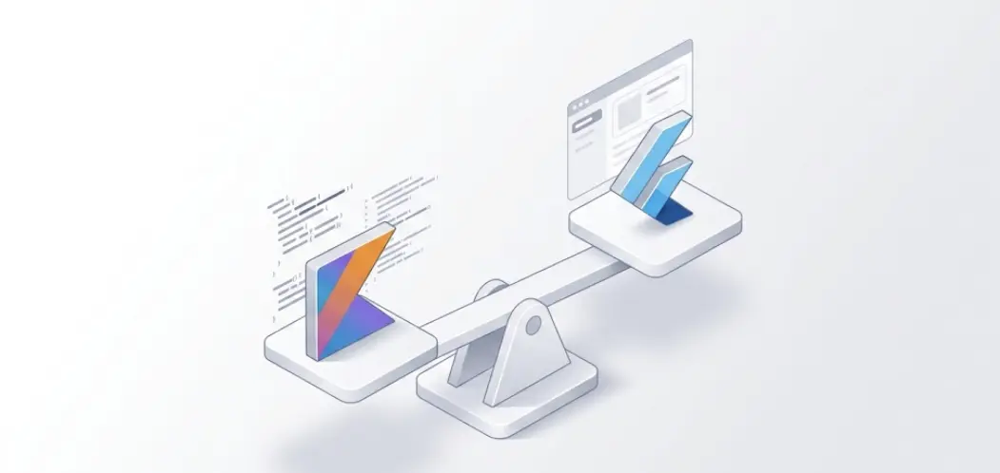

KMP vs Flutter: أيهما تختار لمشروعك القادم؟

لم يعد تطوير التطبيقات يقتصر على مجرد اختيار لغة برمجة، بل أصبح يتعلق باختيار **فلسفة هندسية**. فبينما يقدم Flutter تجربة بصرية موحدة وسرعة في التنفيذ، يأتي Kotlin Multiplatform (KMP) ليحطم الحواجز بين الأداء الأصيل ومشاركة الأكواد.
إذا كنت تبحث عن تطبيق يشبه في سلاسته التطبيقات الأصيلة (Native) لدرجة لا يمكن تمييزها، وتريد الاستفادة من قوة استقرار النظام، فإن KMP هو وجهتك. أما إذا كنت ترغب في إطلاق مشروعك بواجهة موحدة مذهلة عبر جميع المنصات في وقت قياسي، فإن Flutter لا يزال هو الخيار الأسرع.
1. لغز الأداء: Rendering vs Native Bridging
فلسفة KMP: "مشاركة المنطق لا الواجهة"
يعتمد KMP على فكرة عبقرية؛ لماذا نعيد اختراع العجلة ورسم الأزرار؟ KMP يسمح لك بمشاركة الأكواد المسؤولة عن العمليات الحسابية، جلب البيانات من الإنترنت، والتعامل مع قواعد البيانات (Logic) بين الأندرويد والـ iOS. أما واجهة المستخدم (UI)، فيتم رسمها باستخدام Jetpack Compose للأندرويد و SwiftUI للـ iOS (أو استخدام Compose Multiplatform للمشاركة الكاملة). هذا يضمن استجابة 60-120 إطار في الثانية (FPS) دون أي تأخير.
فلسفة Flutter: "كل شيء هو Widget"
يعمل Flutter كمحرك ألعاب؛ فهو يستخدم Impeller لرسم كل بكسل على الشاشة. هذا يعني أن التطبيق سيبدو متطابقاً تماماً على آيفون قديم وهاتف أندرويد حديث. العيب الوحيد هو أن النظام يحتاج لتحميل "محرك الرسم" مع التطبيق، مما يزيد حجم الملف قليلاً ويستهلك موارد معالجة أكثر في العمليات المعقدة.
2. منحنى التعلم وتحديات السوق
لماذا تختار KMP؟
- مبني على Kotlin، وهي لغة محبوبة ومستقرة.
- لا يتطلب تعلم "إطار عمل" جديد بالكامل لمطوري الأندرويد.
- تكامل عميق مع مكتبات جوجل الرسمية (Jetpack).
لماذا تختار Flutter؟
- سهولة تعلم لغة Dart للمبتدئين.
- أكبر مجتمع دعم على StackOverflow و GitHub.
- مئات الـ Widgets الجاهزة التي تختصر شهوراً من التصميم.
3. التوافق مع الأنظمة القديمة (Legacy Systems)
هنا يتفوق KMP بوضوح. إذا كان لديك تطبيق أندرويد ضخم وتريد البدء في مشاركة الأكواد تدريجياً مع iOS، يمكنك القيام بذلك دون إعادة كتابة التطبيق. أما في Flutter، فغالباً ما تضطر لبناء التطبيق من الصفر أو استخدام حلول معقدة لدمجه داخل التطبيقات الأصيلة.
المقارنة التقنية الشاملة
| معيار المقارنة | Kotlin Multiplatform | Google Flutter |
|---|---|---|
| السرعة (Runtime) | Native Code (LLVM) | Engine-based (AOT) |
| حجم الملف (IPA/APK) | أصغر (بدون محرك إضافي) | أكبر (+5-10 MB) |
| تفاعل الواجهة | طبيعي (System Scrolling) | محاكي (Simulated) |
| مشاركة الكود | تصل لـ 70-90% | تصل لـ 95-98% |
| الاستمرارية | دعم مباشر من JetBrains و Google | دعم ضخم من Google |
القرار النهائي لمشروعك
في كونكت تاق، نقوم بتحليل المشروع قبل اختيار التقنية:
اختر KMP إذا كنت:
- تبني تطبيقاً بنكياً أو تجارة إلكترونية ضخمة تتطلب أقصى درجات الأمان والأداء.
- تريد الاستفادة من ميزات النظام الحصرية (مثل Dynamic Island في iOS أو Widgets الأندرويد المتقدمة).
- لديك فريق تطوير متخصص يريد بناء منتج عالي الجودة يدوم لسنوات.
اختر Flutter إذا كنت:
- شركة ناشئة (Startup) تريد إطلاق نموذج أولي (MVP) في أسرع وقت وأقل تكلفة.
- تبني تطبيقاً يعتمد على التصميم الإبداعي والرسوميات الموحدة عبر المنصات.
- تريد مطوراً واحداً يقوم بإدارة الكود للويب، الأندرويد، والـ iOS معاً.
4. مستقبل المنصات المتعددة
نرى أن التوجه العام يميل نحو **الاستقرار التقني**. KMP بدأ يسيطر على التطبيقات الكبرى (Enterprise)، بينما يظل Flutter الخيار المفضل للمشاريع السريعة والمتنوعة. المستقبل ليس لإطار عمل واحد، بل للمطور الذي يعرف كيف يوظف الأداة الصحيحة في المكان الصحيح.
نصيحة الفريق: لا تتبع الموضة، بل اتبع احتياجات مستخدميك. إذا كان المستخدم يقدّر السرعة والبساطة، فـ Flutter رائع. إذا كان يقدّر "جودة الملمس الأصيل"، فـ KMP لا يعلى عليه.